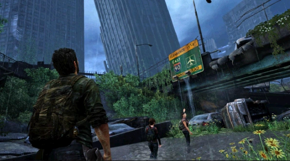

содержание
Окраины
Окраины
Глава
Глава

Сезон: лето
Подглавы:
Снаружи,
Центр,
Музей,
Здание капитолия
Локация:
Бостон
Персонажи:
Джоэл, Тесс, Элли, Рамирес, Уотерс (упом.), Этуотер (упом.), Ша (упом.), Кулидж (упом.)
Мультиплеер
Артефакты:
9
Учебники:
0
Комиксы:
0
Медальоны «Цикад»:
4
Хронология
Предыдущая глава:
Карантинная зона
Следующая глава:
Городок Билла
«Окраины» — третья глава в игре The Last of Us.
Начав своё путешествие к Капитолию, Джоэл, Тесс и Элли выдвигаются к стенам карантинной зоны. После того как они выбрались за пределы карантинной зоны, их сразу ловит военный патруль и производит процедуру сканирования на наличие инфекции. Пока один боец проверяет задержанных, второй вызывает поддержку. Не дожидаясь своего результата, Элли выхватывает свой нож и ударяет им солдата. Джоэл и Тесс, воспользовавшись шумихой, избавляются от патруля. Оказывается, Элли заражена (контрабандисты узнают это по сканеру). Опасаясь за свою жизнь, Элли показывает им следы от укуса, которому, как она утверждает, уже три недели, когда для полного заражения требуется не больше двух дней. Джоэл и Тесс шокированы и озлоблены такому раскладу, однако для спора не остаётся времени, так как в их сторону надвигается военный транспорт. Трио удаётся углубиться в город, дальше от периметра зоны, до отзыва военных сил обратно в зону.
К утру контрабандисты и девочка добираются до здания Капитолия, но вместо долгожданной встречи, они обнаруживают группу убитых военными «Цикад». Джоэл и Тесс начинают спор, где Джоэл настаивает на возвращении в зону и вернуть девчонку обратно к их королеве, а Тесс пытается найти любые следы текущего месторасположения базы «Цикад», отказывая Джоэлу бросать их миссию. Во время спора обнаруживается, что Тесс укусили ещё в музее, но для сантиментов не остаётся времени, так как военный патруль подъехал к дверям здания. Тесс просит Джоэла выполнить возложенную на него задачу как последнюю просьбу умирающего человека и отвезти девочку к Томми, который был некогда связан с «Цикадами». Не дождавшись какого-либо ответа, Тесс прогоняет их прочь, дав немного времени для того, чтобы выбраться из здания и направиться в ближайшую станцию метро, скрывшись от преследования и имея возможность покинуть Бостон "ко всем чертям", и отправиться к Биллу, который должен найти способ проделать долгий путь до брата Джоэла.
Глава «Окраины» содержит следующие предметы коллекционирования:
Сюжет
Снаружи
Начав своё путешествие к Капитолию, Джоэл, Тесс и Элли выдвигаются к стенам карантинной зоны. После того как они выбрались за пределы карантинной зоны, их сразу ловит военный патруль и производит процедуру сканирования на наличие инфекции. Пока один боец проверяет задержанных, второй вызывает поддержку. Не дожидаясь своего результата, Элли выхватывает свой нож и ударяет им солдата. Джоэл и Тесс, воспользовавшись шумихой, избавляются от патруля. Оказывается, Элли заражена (контрабандисты узнают это по сканеру). Опасаясь за свою жизнь, Элли показывает им следы от укуса, которому, как она утверждает, уже три недели, когда для полного заражения требуется не больше двух дней. Джоэл и Тесс шокированы и озлоблены такому раскладу, однако для спора не остаётся времени, так как в их сторону надвигается военный транспорт. Трио удаётся углубиться в город, дальше от периметра зоны, до отзыва военных сил обратно в зону.
Центр
Имея достаточно времени, Джоэл и Тесс обсуждают доступные опции. Элли объясняет, что её иммунитет может привести к созданию лекарства, видимо, опасаясь худшего для своей жизни. Джоэл категорически против завершения миссии, но Тесс, по всей видимости, верит словам девочки. Тесс и Элли продолжают двигаться в сторону Капитолия, вынуждая Джоэла лишь следовать за ними. Продолжая свой путь через центр города, они обнаруживают огромный провал, преграждающий им дорогу, и решают найти обходной путь через полуразрушенное офисное здание. Будучи внутри, трио сталкивается с группой заражённых, включая щелкунов, с которыми Джоэлу приходится разбираться в одиночку, дабы остальные члены группы смогли пройти в целости и сохранности. В конечном итоге, пробравшись через здание и станцию метро, они снова выбираются на улицы.Музей
Большая волна заражённых следует за трио по улицам. Они находят безопасное место в здании исторического музея, в котором все ещё сохранились некоторые экспонаты. Тем не менее, ветхое состояние самого здания, приводит к обрушению потолка, которое разделяет группу. Джоэлу остаётся только в одиночку искать обходной путь, сталкиваясь с большим количеством щелкунов. Добравшись до второго этажа, он видит, как один из заражённых бьётся в дверь, через которую, предположительно, пробежали его спутницы. Разобравшись с гостем, Джоэл обнаруживает за дверью Тесс, отбивающуюся от бегуна, но помогать ей не приходится, и уже вместе они приходят на выручку к Элли. Разобравшись с противниками и уточнив состояние своих спутниц, Джоэл получает нервное: «я в порядке» от Тесс. Их дальнейший путь лежит на крышу.Здание Капитолия
К утру контрабандисты и девочка добираются до здания Капитолия, но вместо долгожданной встречи, они обнаруживают группу убитых военными «Цикад». Джоэл и Тесс начинают спор, где Джоэл настаивает на возвращении в зону и вернуть девчонку обратно к их королеве, а Тесс пытается найти любые следы текущего месторасположения базы «Цикад», отказывая Джоэлу бросать их миссию. Во время спора обнаруживается, что Тесс укусили ещё в музее, но для сантиментов не остаётся времени, так как военный патруль подъехал к дверям здания. Тесс просит Джоэла выполнить возложенную на него задачу как последнюю просьбу умирающего человека и отвезти девочку к Томми, который был некогда связан с «Цикадами». Не дождавшись какого-либо ответа, Тесс прогоняет их прочь, дав немного времени для того, чтобы выбраться из здания и направиться в ближайшую станцию метро, скрывшись от преследования и имея возможность покинуть Бостон "ко всем чертям", и отправиться к Биллу, который должен найти способ проделать долгий путь до брата Джоэла.
Коллекционные материалы
Глава «Окраины» содержит следующие предметы коллекционирования:
- Артефакты - 9
- Список Тесс - на столе с лампой в комнате, где, в ожидании Тесс, спал Джоэл, как только начнётся игра.
- Карта маршрутов патрулирования - на полу, к правой стороне от шахты лифта, по которому спустятся главные герои.
- Листовка об эвакуации - можно найти на дороге возле столба (на одном уровне с автобусом на противоположной стороне), когда Джоэл взберётся на мостовую после окончания преследования, в правом дальнем углу перекрёстка.
- Журнал боевых действий - на лестничной площадке, где обнаруживается второй по счету мёртвый солдат. Трудно пропустить.
- Карта «Цикад»- на лестничном пролёте в станции метро, правее от мёртвого члена Цикад, у которого будет коктейль молотова.
- Записка Дереку - в ящике под кассовым аппаратом в первом же магазине с левой стороны, с щелкунами внутри.
- Медицинская памятка - поднявшись на поверхность и перепрыгнув через большую фуру, необходимо развернуться и забежать в сам контейнер.
- Приказы «Цикад» - у мёртвого члена «Цикад», за лестницей по которой герои спустятся сразу же после видеоролика.
- Записка контрабандиста - проплыв под вагонами в метро, необходимо держаться левой стороны платформы. Там можно будет обнаружить мёртвого контрабандиста, с которого Элли возьмёт фонарик.
- Медальоны Цикад - 4
- Джозеф Лэнз (000113)- свисает с дерева, около входа в офисное здание, после обнаружения большого обрыва.
- Майкл Кипер (000109) - находиться на демонстрационной витрине в музее, до которой можно добраться по краю выступа. Когда Джоэл поднимается на этаж выше по обломкам потолка, после того как Элли сломает вазу, необходимо взобраться на выступ по левой стороне.
- Мелинда Дэвидсон (000214) - находится внутри каменной беседки, в противоположной стороне от главного входа в Капитолий. Можно обнаружить под водой в дальнем конце внутри.
- Шияо Джиянг (000178) - обнаружив записку контрабандиста, необходимо продолжить путь вниз по коридору и нырнуть. В затопленной комнате, на одной из полок, будет находиться медальон.
- Справочники - 0
- Комиксы - 0
Необязательные разговоры
- В самом начале главы, поглядывайте на Тесс, которая будет стоять у окна (сюжетный).
- При входе в офисное здание. Трудно пропустить.
- Отбившись от орды зараженных и воссоединившись с группой, перед выходом из музея на лестничный пролет, предстоит разговор сначала с Тесс...
- ... потом с Элли.
Запертые двери
- После сцены нападения щелкуна, в помещении за буфетом.
- Будучи в музее, после того, как обвал разделит Джоэла с Тесс и Элли, дверь будет находится в столовой\буфете.
Интересные факты
- Изначально именно на этом можно было найти штурмовую винтовку. Само оружие будет висеть в воздухе на втором этаже справа во время первой стычки с военными в Капитолии. В случае его подбора некоторые солдаты сменят оружие на данное.